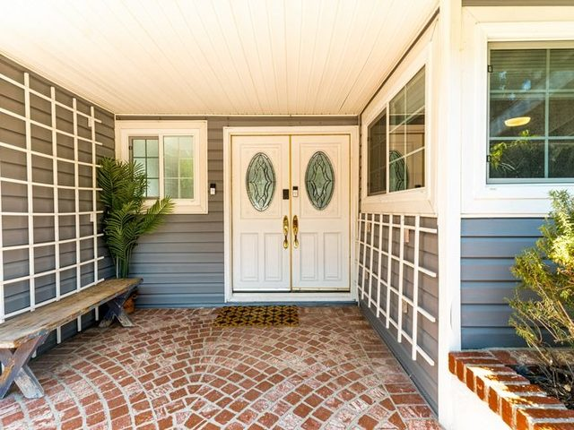
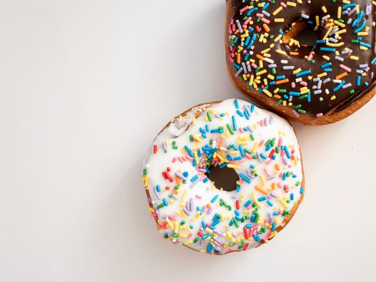
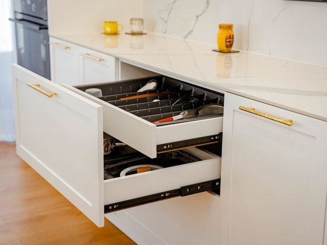
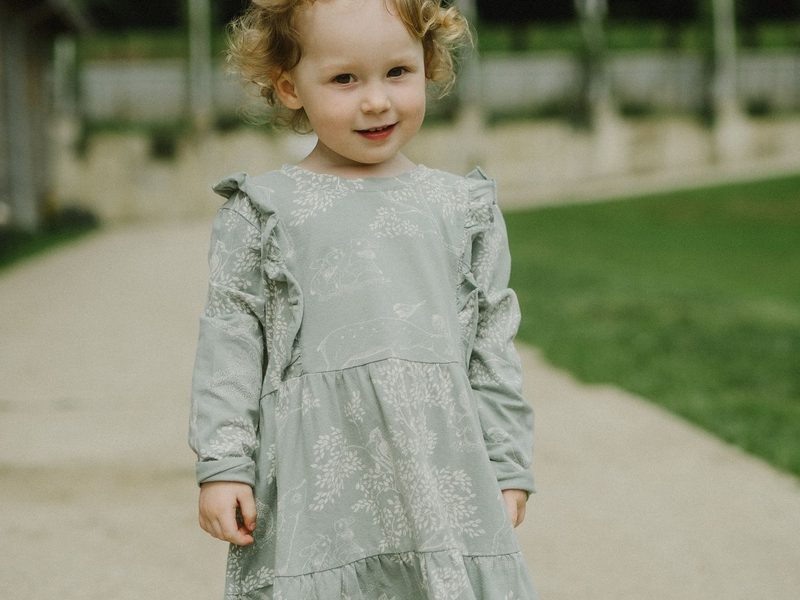
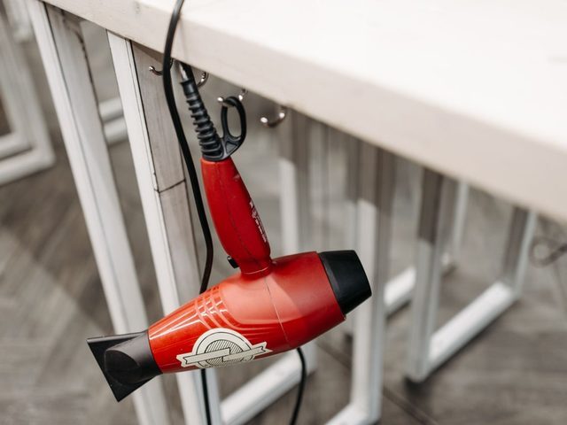

VOCABULARY · WORD UP 單字複習 UNIT 15
D-III．D 開頭（三）
WORD UP「D-III」的 37 個字（dog 到 duty）。紅色＝要複習，藍色標籤＝WORD UP 標熟記、還要在這裡考對。
共 37 個單字．點 🔊 聽發音

1dogn.
狗
Our dog barks at strangers.我們的狗會對陌生人叫。

2dolln.
洋娃娃
My sister has a lot of dolls.我妹妹有很多洋娃娃。
3dollarn.
元（貨幣）
NT$ 新台幣
The ticket costs 100 dollars.這張票 100 元。

4dolphinn.
海豚
Dolphins are very smart animals.海豚是很聰明的動物。

5donkeyn.
驢子
The donkey carried the heavy bags.驢子背著重重的袋子。

6doorn.
門
next door 隔壁
Someone is knocking on the door.有人在敲門。
7dotn.
點；圓點
Connect the dots to draw a star.把點連起來畫出星星。
8doubleadj./v.
雙倍的；加倍
double room 雙人房
The price has doubled.價格變成兩倍了。

9Double Tenth Dayn.
雙十節（國慶日）
10 月 10 日
There are fireworks on Double Tenth Day.國慶日有煙火。
10doubtn./v.
懷疑
b 不發音；no doubt 無疑地
I doubt that he will come.我懷疑他會不會來。

11doughnutn.
甜甜圈
= donut
I had a chocolate doughnut.我吃了一個巧克力甜甜圈。

12downadv./prep.
向下
sit down 坐下
Please sit down.請坐下。

13downstairsadv.
在樓下；到樓下
upstairs 樓上
Mom is downstairs in the kitchen.媽媽在樓下廚房。
14downtownadv./n.
在市中心；市區
Let's go shopping downtown.我們去市中心逛街吧。

15dozenn.
一打（12 個）
a dozen eggs（不加 of）
Mom bought a dozen eggs.媽媽買了一打雞蛋。

16Dr.n.
醫生；博士（稱呼）
Doctor 的縮寫
Dr. Lin is a kind doctor.林醫師是一位親切的醫生。

17dragonn.
龍
The dragon is a symbol of power in Chinese culture.在中華文化裡，龍是力量的象徵。

18Dragon-Boat Festivaln.
端午節
農曆五月五日
We eat rice dumplings during the Dragon-Boat Festival.端午節我們吃粽子。

19draman.
戲劇；連續劇
My mom loves Korean dramas.我媽媽很愛看韓劇。

20drawv.
畫（線條）；拉
三態 draw-drew-drawn
Can you draw a cat?你會畫貓嗎？

21drawern.
抽屜
The scissors are in the top drawer.剪刀在最上面的抽屜。

22dreamn./v.
夢；做夢；夢想
dream of／about
My dream is to be a pilot.我的夢想是當飛行員。

23dressn./v.
洋裝；穿衣服
get dressed 穿好衣服
She is wearing a red dress.她穿著紅色洋裝。

24dressern.
梳妝台；五斗櫃
There is a mirror on the dresser.梳妝台上有一面鏡子。

25drinkv./n.
喝；飲料
三態 drink-drank-drunk
Drink more water every day.每天多喝水。
26drivev.
開車
三態 drive-drove-driven
My dad drives me to school.爸爸開車載我上學。

27drivern.
駕駛；司機
The bus driver is very careful.公車司機很小心。

28dropv./n.
掉落；一滴
過去式 dropped
I dropped my phone on the floor.我把手機掉在地上。

29drugn.
藥；毒品
Say no to drugs.對毒品說不。

30drugstoren.
藥局
You can buy medicine at the drugstore.你可以在藥局買藥。

31drumn.
鼓
play the drums
He plays the drums in the band.他在樂團打鼓。
32dryadj./v.
乾的；把…弄乾
過去式 dried
Dry your hair before you go to bed.睡前把頭髮吹乾。

33dryern.
烘乾機；吹風機
hair dryer 吹風機
Put the clothes in the dryer.把衣服放進烘乾機。

34duckn.
鴨子
The ducks are swimming in the pond.鴨子在池塘裡游泳。

35dumbadj.
笨的；啞的
b 不發音
Sorry, that was a dumb question.抱歉，那是個笨問題。

36dumplingn.
餃子
rice dumpling 粽子
Grandma makes the best dumplings.奶奶包的餃子最好吃。
37dutyn.
責任；職責
on duty 值班
It is our duty to protect the earth.保護地球是我們的責任。
FOCUS
容易搞混的字
| 字 | 用法 | 例子 |
|---|---|---|
| draw / drawer | 畫 ／ 抽屜 | draw a map ／ open the drawer |
| dress / dresser | 洋裝、穿衣 ／ 梳妝台 | a long dress ／ a wooden dresser |
| drug / drugstore | 藥、毒品 ／ 藥局 | take drugs ／ go to the drugstore |
| dry / dryer | 乾的、弄乾 ／ 烘乾機、吹風機 | dry the dishes ／ a hair dryer |
| downstairs / downtown | 樓下 ／ 市中心 | go downstairs ／ work downtown |
dozen 前面有數字時不加 s、不加 of：two dozen eggs。
FOCUS
不規則動詞三態
| 原形 | 過去式 | 過去分詞 |
|---|---|---|
| draw | drew | drawn |
| drink | drank | drunk |
| drive | drove | driven |
| dream | dreamed／dreamt | dreamed／dreamt |
| drop | dropped | dropped |
| dry | dried | dried |